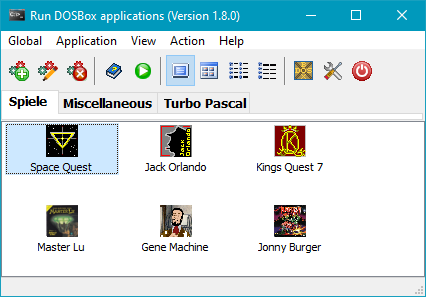
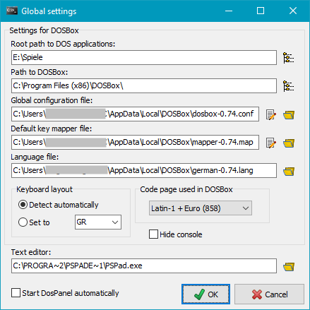
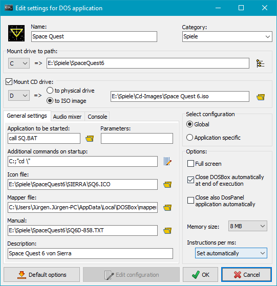
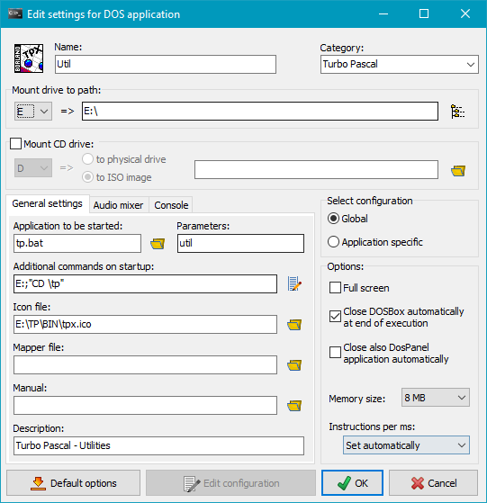

|
DosPanel - Windows-Desktop for DosBox |
| © 2014-2023, J. Rathlev, 24222 Schwentinental, Germany |
Overview
Installation
Command line option
Operation
Sample
Author
Licensing

The program is a Windows frontend to the DOS emulator
DOSBox
to manage and run DOS applications and runs runs on all current Windows systems.
The user can configure all
settings required by DOSBox without having to concern himself with the
rather complex syntax of DOSBox configuration files. The settings are saved
for each DOS application separately.
For better view the DOS applications can be assigned to different categories.
The functions at a glance:
- Assigning the drives of the DOS application:
- Any directory on the host system as harddrive
- Any DVD/CD drive of the host or an ISO image as CD drive
- Selection of an executable or a batch file with optional parameters
to be started automatically in DOSBox
- Adding of DOS commands to be executed before starting the above executable
(e.g. changing directory)
- Selection of an icon to be displayed in DosPanel
- Optional selection of a keymapper
- Selection of a manual (e.g. text or PDF) for the DOS application
- Optional comment
- Additional options: full screen display and automatic closing of DOSBox
- Adjusting the size of the working memory
- Adjusting the emulation speed
DOSBox
DOSBox is an emulator to run DOS application on different platforms
(e.g Windows, Linux). So many of the old DOS games can be resurrected. You will
find more information and a download at
DOSBox. The documentation
will be found
here.
On Windows 7, 8, 10 and 11 just start the executable setup file
to install the program. To do so the rights of an administrator
are required. For older Windows versions (XP and Vista), the installation must be
carried out by unpacking the zip archive provided.
Before starting DosPanel for the first time it
is necessary to install the current version of DOSBox and run it once.
- /ini:[IniFile]
- The user configuration is saved in the file DosPanel.ini. This file
is located by default in the Application Data directory of the user:
- Vista, Windows 7,8 and 10: C:\Users\<Username>\AppData\Roaming
- Windows 2000 and XP: C:\Documents and Settings\<Username>\Application Data
Using this option you can select an alternative configuration file at any other location
(e.g. E:\DosBox\DosPanel-1.ini).
If there is no path specified in [IniFile], the path of the program
installation will be used.
- /lang:[LangId]
- Use the specified GUI language (LangId = en or de)
- Global
- Settings - Basic settings
- Language - Selection of the desktop language for DosPanel
(currently English and German)
- Exit - Close DosPanel
- Application
- New - Add a DOS application to DosPanel
- Edit - Edit the configuration of DOS application
- Duplicate - Duplicate the selected DOS application
- Remove - Remove a DOS application from
DosPanel
- Adjust keymapper - Starts the
DOSBox keymapper to make individual mappings of keys on keyboard
and joystick.
- View
- Large icons - Show the DOS applications as large icons
- Small icons - Show the DOS applications as small icons
- List - Show the DOS applications as list
- Details - Show the DOS applications as detailed list
(e.g. drive mappings)
- Action
- Run - Run the selected DOS application
- Show manual - Show the manual of the selected
DOS application
- Run DOSBox - Run DOSBox without any
DOS application
- Convert text - Convert text files to several code pages
(e.g. 437 or 858)
- Help - About the program
Context menu of an application
A right-click on the icon of an application will open a context menu.
A click on a region of the screenshot at right will lead to specific help for that
function.

When starting DosPanel for the first time after the installation,
the program searches for an installed DOSBox and will adjust most
basic settings automatically. Next, you should enter your individual settings.
The screenshot at right will give an overview.
Settings for DOSBox
- Root path to DOS applications: Select the root directory of
your DOS applications.
- Path to DOSBox: This entry is made by the program automatically.
- Global configuration file: This is the file with the basic configuration
created from DOSBox. The entry is made by the program automatically.
If required, the configuration file can be changed with any text editor.
It is automatically adopted for each new application added.
Notes about the format you will find in the DOSBox documentation.
- Default key mapper file: This is the file with settings for redirection of
keys and joystick buttons used by certain DOS applications in DOSBox.
This entry is made by the program automatically. Application specific
adjustments are possible.
- Language file: This entry is made by the program automatically and is
only needed for other languages than English.
- Keyboard layout: If the automatic detection in DOSBox fails,
you can specify your keyboard layout (e.g. GR for a German
keyboard) manually.
- Code page used in DOSBox: Select the code page you want to use for
screen output of DOSBox .
- Hide console: Starting DOSBox will open a DOSBox console
in a second window. If you wish, you can hide this window.
Other settings
- Text editor: The DOSBox configurations can be edited using any text editor.
When DosPanel is started for the first time, it searches the Windows registry
for the application entered there for txt files and displays the corresponding path.
If desired, the user can also select a different text editor by clicking on the button to the right.
- Start DosPanel automatically: If this option is selected, DosPanel
will be loaded automatically on each Windows start (see Startup folder).

Add a new application
Clicking this button will add a new DOS application to DosPanel.
In the dialog that follows, you have to enter the settings for this application.
Refer to next chapter for more details.
All possible settings are shown in the screenshot at right:
- Name: The name for the application that is shown in DosPanel.
- Category: The name of the page where the application is displayed.
If no category is specified, the application will be assigned to
Miscellaneous.
- Mount drive to path: Select a directory on the host system that will
be used as main drive in DOSBox (e.g C:).
- Mount CD drive: If this option is activated, a virtual
CD drive is connected to a physical drive of your host system or to an ISO image on your
host system (e.g. D:) when DOSBox is started.
- General settings:
- Application to be started: Select the DOS application or the batch file
on your main drive (e.g C:) or any subdirectory that will be started
automatically in DOSBox.
- Parameters of application: Optional parameters for the application to
be started automatically.
- Additional commands on startup: Enter the DOS commands that will be executed
before starting the above application (e.g. changing drive and directory).
- Icon file: Select an image file (e.g. .ICO) or an exe file
containing an icon for the DosPanel display.
- Mapper file: Select the DOS application specific mapper file, if needed
(more ..). Usually this file is located in the
main drive directory of the DOS application (see above).
- Manual: Select a file on your host system that contains a manual for
the selected DOS application. This may be any file type (e.g. text or PDF)
and will be opened with the application assigned in Windows (e.g. Adobe Reader
or Sumatra PDF).
- Description: This is a short description for the selected DOS application
that will be displayed in DosPanel when moving the mouse over
the assigned icon.

- Audio mixer
The internal DOSBox program MIXER can be used to adjust the volume
of the various sound sources individually. DosPanel provides a user-friendly
interface for this purpose (see picture on the right) and makes these settings
automatically before the DOS program is started.
- Channel: DOSBox supports these sound sources:
Master (MASTER), Disney (DISNEY), Speaker (SPKR),
Gravis Ultra Sound (GUS), Sound Blaster (SB), FM Stereo (FM)
and CD Audio (CDAUDIO).
- Volume control: The sliders can be used to set the volume of the selected
source between 0 and 100%. If this is to be done separately for left and right,
the Connect sliders option must be switched off.
- List of channel settings: The buttons can be used to add the selection
to the list of settings to be made when starting the DOS program or to remove
a setting from the list. It is also possible to
delete the list completely and change the order of the entries.
- Select configuration: The configuration provided by DOSBox is
always selected by default. If special settings are required for the respective
application, you can switch to Application specific. The basic configuration
is then copied to the application directory and can be edited there individually
(click on Edit configuration).
- Options: You can make here some more settings for DOSBox.
Usually this is only necessary in those cases the default settings do not work.
More information about this you will find in the DOSBox documentation.
- Full screen: DOSBox is started in full screen mode.
- Close DOSBox automatically at end of execution: When ending the
DOS application also DOSBox will close automatically.
- Memory size: If necessary you can adjust the size of DOSBox
memory.
- Instruction per ms: This settings affects the speed of the
DOSBox emulation. In most cases the automatic mode will work.
Some DOS games may require an individual setting to a lower value.
(Use preset). In this case the setting from the conf will be used.
You will find more information about this topic in the DOSBox documentation.
- Default options: By clicking on this button, the options displayed above
are reset to the values as they are saved in the respective configuration file.
- Edit configuration: Click on this button to open the text editor selected
in the basic settings with the application configuration
file in order to customize it.
Use this command to add a new DOS application to DosPanel and
copy all settings from the selected application. Edit the settings as described
above.
Use this command to remove a DOS application from DosPanel.
Have a look into the DOSBox documentation to learn more about the keymapper.
Calling this menu item will open the DOSBox keymapper to make individual
settings for keyboard and joystick. This may be useful with some DOS applications
to simplify the handling. There is a default mapper file (see Basic settings)
and optional a mapper file for each DOS application that will be created using
this command. The settings will be applied to the configuration automatically.
The view settings are similar to those in the Windows Explorer. If you select
Details, amongst others for each DOS application the assigned drives
and the selected application for automatic start will be displayed.
Run
The selected DOS application will be started in DOSBox using the
specified settings.
Show the manual of the selected DOS application. Text files are displayed using
an internal viewer, all other file types will use the application assigned by Windows,
e.g. AdobeReader for PDF files.
DOSBox will be opened without starting a special DOS application.

Everybody wishing to use the popular Turbo Pascal IDE with 64-bit versions
of Windows, can realize this very simply using DosPanel and DOSBox. The
required configuration can be explained using the following example:
Create a directory TP on any drive (e.g. E:). Below this, create a
subdirectory bin that will hold all binary files belonging to Turbo Pascal
and separate subdirectories for the source files of each Pascal project. Copy
this Batch file into the root directory TP:
rem @echo off
echo Start Turbo-Pascal 7.0 (TPX)
E:
path \BIN;%PATH%
if "%1"=="" goto normal
cd %1
if "%2"=="n" goto quit
if "%2"=="N" goto quit
if "%2"=="" goto normal
TPX %2
echo off
goto ende
:normal
TPX
echo off
:quit
Then create a new DOS application in DosPanel for each
project using the settings shown on the right. The entries for Name and
Parameter specify the particular project subdirectory.
- Dr. Jürgen Rathlev
- 24222 Schwentinental, Germany
- E-Mail: kontakt (a) rathlev-home.de
- The program was written in Embarcadero Delphi 10 Seattle ®.
- DOSBox is
an OpenSource project.
-
- There is no warranty either for the correct operation of the program or for the
correctness of the results. The author shall not be liable for any possible
damages to hardware and software arising out of use of the program.
- 1. Using the program
- The program may be used by anyone, in any way, for any purpose, without charge.
- 2. Distributing the program
- The program may be distributed by any means, provided that the original files
as supplied by the author remain intact and no charge is made other than for
reasonable distribution costs.
The program may not be distributed as a component of any commercial product
without a prior license agreement with the author.
J. Rathlev, 24222 Schwentinental, Germany, December 2023